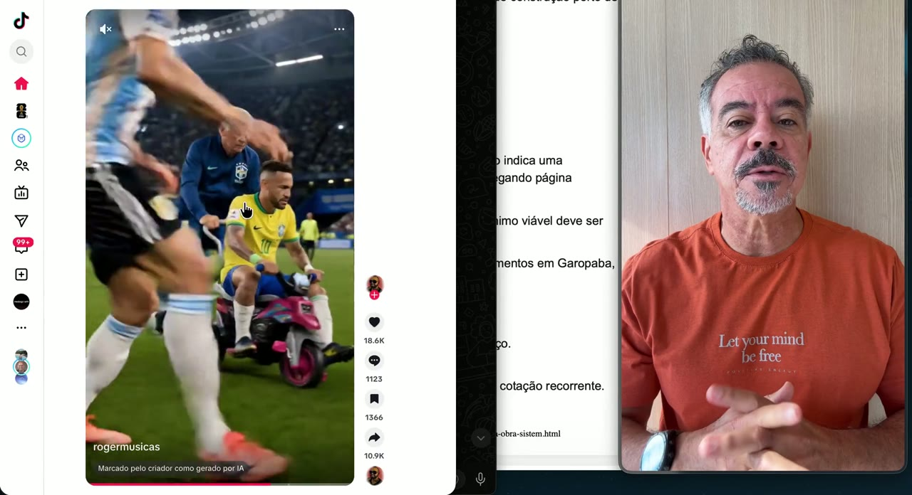
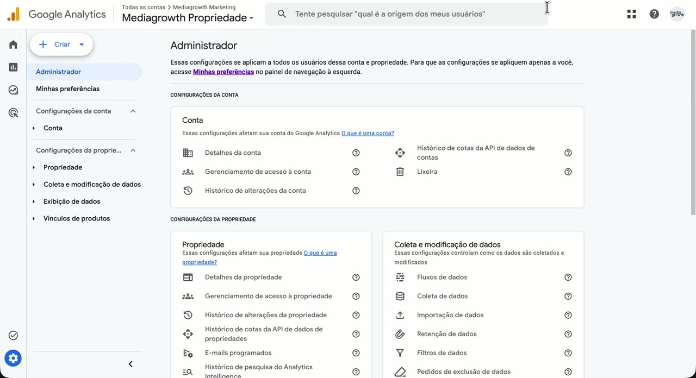
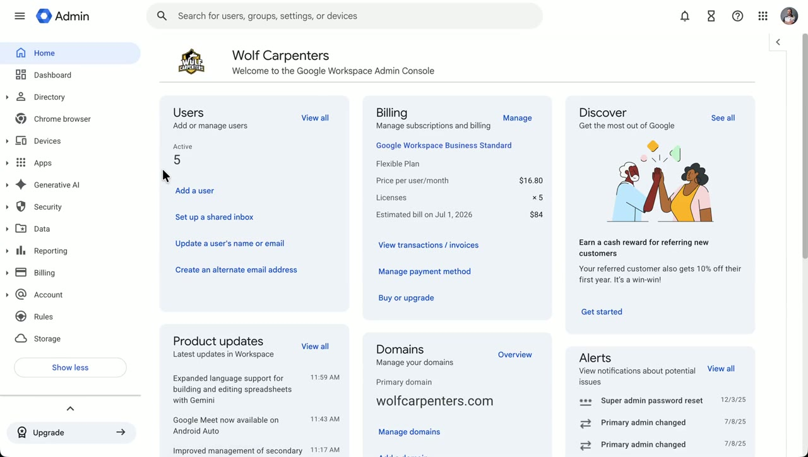
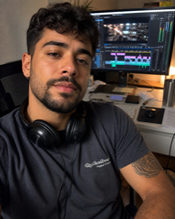
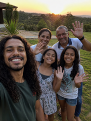

×
MediaGrowth
Processos · MediaGrowth
Central de processos, documentos padronizados e vídeo-tutoriais da equipe.
🚀
Comece por aqui
1 processo
🤖
Agentes & Skills
18 agentes
🎬
Produção de Conteúdo
1 processo
⚙️
Operação
2 processos
📇
CRM
1 processo
← Todas as categorias
Nenhum processo encontrado.
🧭
Como usar a Central de Processos
O que é, pra que serve e como navegar por esta central.
Abrir processo →

▶
🎬
Como achar vídeos e imagens impactantes (Marcelo e clientes)
Como garimpar os vídeos/imagens que ilustram o roteiro e causam impacto — e o que é proibido usar.
Abrir processo →

▶
📊
Como dar acesso ao Google Analytics
Passo a passo pra adicionar alguém como administrador no Google Analytics (GA4) — pela área de Administrador da conta.
Abrir processo →

▶
✉️
Gerenciar conta Google Workspace (Admin Console)
Como administrar as contas de e-mail dos clientes pelo Google Workspace Admin Console. Tutorial 1: alterar / redefinir a senha de um usuário.
Abrir processo →
🤖
Jessica
Gestora de Tráfego
5 skills documentadas · clique pra ver o painel
Ver skills →
🤖
Helena
Social Media Strategist
6 skills documentadas · clique pra ver o painel
Ver skills →
🤖
Mia
Designer
20 skills documentadas · clique pra ver o painel
Ver skills →

🤖
Victor
Editor de Vídeo
9 skills documentadas · clique pra ver o painel
Ver skills →
🤖
Alex
Gestor de Estruturação
5 skills documentadas · clique pra ver o painel
Ver skills →
🤖
Brian
Analista de Dados
6 skills documentadas · clique pra ver o painel
Ver skills →
U
🤖
Utilitárias
Skills utilitárias do sistema
19 skills documentadas · clique pra ver o painel
Ver skills →
🤖
Carla
Apresentações
1 skill documentada · clique pra ver o painel
Ver skills →
🤖
Daniel
CEO MediaGrowth
4 skills documentadas · clique pra ver o painel
Ver skills →
🤖
Emily
Copywriter
8 skills documentadas · clique pra ver o painel
Ver skills →

🤖
Frank
DEV / T.I
15 skills documentadas · clique pra ver o painel
Ver skills →
🤖
Gabriel
Gerente de Clientes
19 skills documentadas · clique pra ver o painel
Ver skills →
🤖
Iris
Curadora de Conhecimento
4 skills documentadas · clique pra ver o painel
Ver skills →
K
🤖
Kevin
SEO
2 skills documentadas · clique pra ver o painel
Ver skills →
🤖
Naomi
Financeiro
3 skills documentadas · clique pra ver o painel
Ver skills →
O
🤖
Oliver
Vendas
7 skills documentadas · clique pra ver o painel
Ver skills →
🤖
Pedro
Mensageiro WhatsApp
2 skills documentadas · clique pra ver o painel
Ver skills →
🤖
Sarah
Gestora de CRM
6 skills documentadas · clique pra ver o painel
Ver skills →
🎓
Treinamento CRM (vídeos)
↗
Tutoriais em vídeo do CRM — conversas, oportunidades, acesso e mais.
Abrir ↗
MediaGrowth · Central de Processos